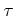
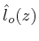
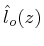

The CNLSE is the vectorial version of the NLSE. It is used whenever polarization effects are to be considered, since the optical (transverse) propagating field envelope is represented by , where the bold face stands for a complex vector with 2 elements (Jones vector). The CNLSE, in a general form, has the following expression [34,35,36]:
The linear terms are due to the fiber birefringence: when a
polarized optical field propagates through a birefringent fiber,
the propagation constant depends on the field polarization. This behavior
can be due to imperfections in the fiber core as well as geometrical
asymmetries, stresses, bends, etc. Birefringence is stochastic and
fluctuates both in time (slowly, compared to the symbol period; hence
it is assumed constant in  in the CNLSE) and along fiber length,
depending on the characteristics of the fiber and on local condition,
such as temperature. At each position  , the fiber is characterized
by an eigenmode
, corresponding to the field polarization
with slowest propagation constant
; at the same,
time, the orthogonal eigenmode
, is the field polarization
with fastest propagation constant
. The difference
between
these propagation constants is the strength of the birefringence,
while
represents the birefringence orientation.
is a 3D unit-magnitude real vector (a Stokes vector) [37,38].
As a simple example,
can represent the ``horizontal''
linear polarization, where the field oscillates in the direction
(hence, the second element of
is null); in this case,
is the the ``vertical'' linear polarization
(
oscillates along the direction and its first element
is null). It is generally believed that silica fibers are characterized
by linear birefringence [39]: this implies that the
third component of
is null.
, the fiber is characterized
by an eigenmode
, corresponding to the field polarization
with slowest propagation constant
; at the same,
time, the orthogonal eigenmode
, is the field polarization
with fastest propagation constant
. The difference
between
these propagation constants is the strength of the birefringence,
while
represents the birefringence orientation.
is a 3D unit-magnitude real vector (a Stokes vector) [37,38].
As a simple example,
can represent the ``horizontal''
linear polarization, where the field oscillates in the direction
(hence, the second element of
is null); in this case,
is the the ``vertical'' linear polarization
(
oscillates along the direction and its first element
is null). It is generally believed that silica fibers are characterized
by linear birefringence [39]: this implies that the
third component of
is null.
In (3.9), birefringence is modeled by a Stokes
vector
with a linear frequency dependence, although other models are possible;
the variations in  of its orientation cause ``random mode coupling'',
i.e., the exchange of energy between the field components parallel
or perpendicular to
, eventually leading to Polarization
Mode Dispersion (PMD), a distortion of the pulse shape causing signal
degradation and intersymbol interference. If the frequency dependent
term
is set to zero, there is no pulse distortion,
and the overall result of birefringence is just a rotation of the
signal State Of Polarization (SOP) on the Poincaré sphere.
If is constant along
of its orientation cause ``random mode coupling'',
i.e., the exchange of energy between the field components parallel
or perpendicular to
, eventually leading to Polarization
Mode Dispersion (PMD), a distortion of the pulse shape causing signal
degradation and intersymbol interference. If the frequency dependent
term
is set to zero, there is no pulse distortion,
and the overall result of birefringence is just a rotation of the
signal State Of Polarization (SOP) on the Poincaré sphere.
If is constant along  , the fiber is called Polarization
Maintaining Fiber (PMF): its input-output behavior amounts to splitting
each input pulse into two ``shadow pulses'' arriving at the fiber
output with a mutual delay equal to
: this effect,
known as first-order PMD, causes intersymbol interference.
In the more general case, mode coupling produces PMD at all orders,
hence a pulse is not only split in two (first-order PMD), but each
of the shadow pulses suffers a different amount of linear distortion,
including GVD, that differently affects the polarized components of
the signal (Polarization-dependent Chromatic Dispersion, PCD).
, the fiber is called Polarization
Maintaining Fiber (PMF): its input-output behavior amounts to splitting
each input pulse into two ``shadow pulses'' arriving at the fiber
output with a mutual delay equal to
: this effect,
known as first-order PMD, causes intersymbol interference.
In the more general case, mode coupling produces PMD at all orders,
hence a pulse is not only split in two (first-order PMD), but each
of the shadow pulses suffers a different amount of linear distortion,
including GVD, that differently affects the polarized components of
the signal (Polarization-dependent Chromatic Dispersion, PCD).
The symbol
, appearing in (3.9),
is the so-called spin-vector, whose elements are the three
Pauli matrices (hence,
is actually a tensor!); the
scalar product
 yields a unitary
Jones matrix, i.e. a complex matrix with unit determinant,
that acts on the elements of the field vector
and produces
mode-coupling.
yields a unitary
Jones matrix, i.e. a complex matrix with unit determinant,
that acts on the elements of the field vector
and produces
mode-coupling.
Of the three Pauli matrices, only the third, , appears in the nonlinear term in (3.9): despite many different (but equivalent) expressions are possible for the nonlinear term in (3.9), the concept is that the circular component of the signal polarization (associated to the third Stokes component, whose mathematical expression is ) plays a special role in the CNLSE. This peculiarity is not always remarked in the literature, since other alternative and simplified forms of the CNLSE are implemented for its numerical solution.
The Stokes representation of the complex electric field is by definition [38,37]:
where is the Poincaré unit vector or Stokes SOP vector. The Poincaré sphere represents this vector as a point on the unit sphere, whose main axes are generally called . Being a unit vector it can be written as:
where and
 are the azimuth and ellipticity
of the field
. Hence, linear polarized light lies on
the equator of the sphere, while circular polarized light lies on
one of the poles of the sphere. Any other position over the sphere
identifies an elliptical polarized field. Moreover, orthogonal fields
have Stokes vectors in opposite directions on the Poincaré sphere.
are the azimuth and ellipticity
of the field
. Hence, linear polarized light lies on
the equator of the sphere, while circular polarized light lies on
one of the poles of the sphere. Any other position over the sphere
identifies an elliptical polarized field. Moreover, orthogonal fields
have Stokes vectors in opposite directions on the Poincaré sphere.
The numerical integration of (3.9) requires choosing
a sufficiently small step (in  ): in fact, the birefringence term
with
is purely imaginary and causes a differential
phase rotation in the signal components (hence a change of its state
of polarization). Such a phase rotation is frequency-independent and
does not cause signal distortion, but indeed affects the nonlinear
term in the CNLSE. An important parameter of transmission fibers is
the beat length
: one
mist then choose an integration step such that the phase
rotation
is small compared to .
Since
): in fact, the birefringence term
with
is purely imaginary and causes a differential
phase rotation in the signal components (hence a change of its state
of polarization). Such a phase rotation is frequency-independent and
does not cause signal distortion, but indeed affects the nonlinear
term in the CNLSE. An important parameter of transmission fibers is
the beat length
: one
mist then choose an integration step such that the phase
rotation
is small compared to .
Since  is typically of the orders of meters (or tens of meters),
for standard fibers, the integration of (3.9)
is extremely time-consuming.
is typically of the orders of meters (or tens of meters),
for standard fibers, the integration of (3.9)
is extremely time-consuming.
An alternative approach, requiring much smaller computation times,
is that of averaging the impact of signal polarization over the nonlinear
term in (3.9): if  is small enough, the
rapid variations in the state of polarization of
are
such that the term
undergoes a complete mixing and reduces to
,
on average. The CNLSE is then simplified to
is small enough, the
rapid variations in the state of polarization of
are
such that the term
undergoes a complete mixing and reduces to
,
on average. The CNLSE is then simplified to
Optilux toolbox reference manual